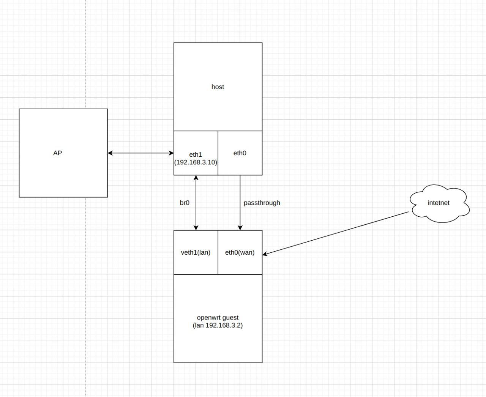

软路由虚拟机
准备环境
摸着石头过河，折腾了几天，终于装好了心心念念的虚拟机软路由。
- 硬件环境：3400G + deskmini A300（自带一个网口） + M2 转网口，物理机双网口
- 物理机系统： Gentoo Linux
网络拓扑，见下图。除了 host 以外的本地设备都是通过设置为 AP 模式的硬路由连接网络。

固件选择
固件我们选择基本 openwrt 官方 21.02 代码定制的 garypang13 的固件，github 项目地址为 https://github.com/garypang13/OpenWrt_x86-r2s-r4s-Rpi ，固件下载地址为 https://op.supes.top/ 。
其特点是原生固件非常纯净，只自带少量插件。而作者自建的 opkg 源又包含了 openwrt 的绝大部分主流插件，想要安装插件只需要在 luci 上搜索，然后点击安装即可，不再需要自己编译等复杂步骤。同时还自带了一键升级固件功能，作者基本上每周都会放出新的固件，如果想要升级，一键便可完成。
创建网桥
首先创建用于 eth1 网口和软路由虚拟机 lan 口连接的网桥。
# 创建网桥 nmcli connection add type bridge ifname br0 stp no # 将eth1添加倒网桥中 nmcli connection add type bridge-slave ifname eth1 master br0 # 关闭现有的连接（可以使用nmcli connection show --active命令查看） nmcli connection down <Connection> # 开启新创建的网桥 nmcli connection up bridge-br0
注意以上操作会关闭正在使用的网口，如果是远程连接到物理机且仅有单网口，请 谨慎操作 ！
这时如果 eth1 是连接在带 DHCP 的硬路由中，那么会自动为网桥 br0 分配 IP，同时 eth1 上的 ip 地址会消失，可以直接通过网桥 br0 的 ip 访问 eth1 网口。
创建虚拟机
使用 libvirt + qemu(kvm)创建虚拟机：
- CPU 2 核心
- 内存 1G
- 硬盘直接使用 openwrt 的 img 文件
eth0 网卡直接设置为直通，另外添加一张网卡，[Network Source]设置为 Bridge device，[Device name]设置为 br0，[Device model]设置为 virtio。即创建桥接到 br0 的第二张网卡。
其他配置默认，之后正常启动 openwrt 虚拟机即可。
配置 openwrt
通过 virt-manager 或 vnc 进入刚刚创建好的 openwrt 虚拟机，修改配置文件 /etc/config/network 。将其中的 config interface 'lan' 中的 option ipaddr 地址设置为 192.168.3.2。之后重启 openwrt。
这样就可以在网页上通过地址 192.168.3.2 登陆 openwrt 的管理页面 luci 了。再进入[网络->接口]页面，编辑 WAN 接口，选择 PPPoE 选择，填入用户名、密码连接互联网。
这时将光猫的网线插到 eth0 网口中，再将路由器改为 AP 模式，再通过以下步骤为 br0 设置静态 ip，然后重启整个物理机。这样最基本的网络就应该已经配置完成了。
nmcli connection modify bridge-br0 ipv4.addresses 192.168.3.10 nmcli connection modify bridge-br0 ipv4.gateway 192.168.3.2 nmcli connection modify bridge-br0 ipv4.dns 192.168.3.2 nmcli connection modify bridge-br0 ipv4.method manual nmcli connection up interface
插件安装
在 luci 的[系统->软件包]页面中，安装 openclash、passwall、ddns、wake on line、upnp、netdata、online user 等常用插件后，再对插件进行简单的配置，即可正常使用了，科学上网、路由监控等功能都已完备。
参考链接
- Network_bridge wiki https://wiki.archlinux.org/title/Network_bridge
- 软路由折腾记 https://github.com/fanchangyong/blog/issues/22
- qemu-kvm 安装 koolshare LEDE-X64 固件 https://koolshare.cn/thread-68876-1-1.html
- 将 ubuntu 设置为 NAS——10. 虚拟机 KVM 及软路由 LEDE 安装 https://post.smzdm.com/p/adwrn5gn/
- KVM 虚拟化网络优化技术总结 https://www.cnblogs.com/lsgxeva/p/8964363.html
- OpenWrt 编译 LuCI -> Applications 添加插件应用说明 https://www.right.com.cn/forum/thread-3682029-1-1.html